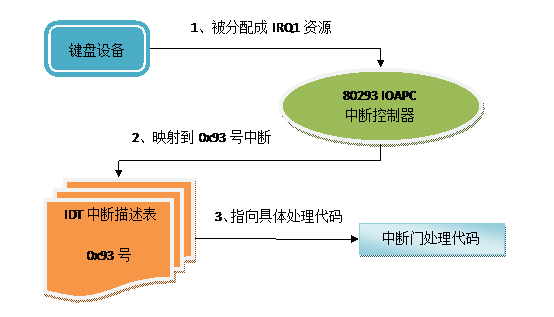
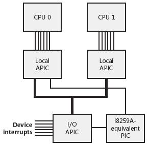
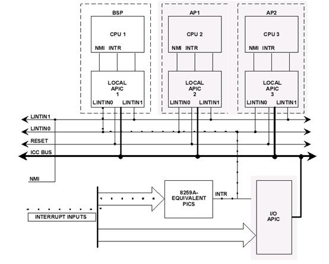
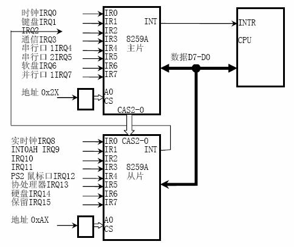

PS2键盘保护的另一种方法
By Mix
mix#ph4nt0m.org
为了保障用户输入帐号密码的安全性，各种安全控件、密码保险箱产品比比皆是，衍生
出了很多保护键盘的方法。就笔者了解的，纠结到系统底层国内的资料大部分都是落在了直
接I/O端口读写上，再往上一点就是IDT中断了，本文将逐步探讨和中断有关的攻防技术，这
也是笔者一次学习和小结的过程。
一、基础知识
有不少内容其实大学的课程里面都有，只是当时听讲的时候大都觉得枯燥无味，刚走出
大学校门时更是觉得那时候学的那些东西在实际工作中几乎完全用不到，但是在深入学习和
研究过程中才发现原来那些东西居然真的需要被了解和掌握。
所谓中断，就是指在CPU执行过程中出现了某些突发事件时，CPU需要停止当前程序转去
处理突发事件，处理完成后返回原处继续之前的工作。那么系统中每个中断对应的哪段处理
代码（即中断门），就需要一份对应的表以供查找，这个表被称为中断描述符表Interrupt
Descriptor Table（即IDT）。
对于IDT的存放和使用，按照程序员的逻辑来说就是在一片连续内存中依次存放着0xFF
个P2C_IDTENTRY结构，结构描述如下：
--code-------------------------------------------------------------------------
typedef struct P2C_IDT_ENTRY_ {
P2C_U16 offset_low;//中断门所在地址的底位
P2C_U16 selector;
P2C_U8 reserved;
P2C_U8 type:4;
P2C_U8 always0:1;
P2C_U8 dpl:2;
P2C_U8 present:1;
P2C_U16 offset_high; //中断门所在地址的高位
} P2C_IDTENTRY, *PP2C_IDTENTRY;
-------------------------------------------------------------------------------
在WindowsXP默认的IDT中，第0x93个结构就是被用来描述键盘的中断门。思维迅猛的读
者肯定会刨根问底了：“那为什么第0x93是描述键盘的呢？”
因为在硬件设备和CPU之间还有个衔接设备，叫中断控制器，专门负责管理IDT的填充、
查找和修改。请允许粘贴一段关于中断控制器的精确描述：
-------------------------------------------------------------------------------
中断控制器经历了PIC(Programmable Interrupt Controller，可编程中断控制器)和
APIC（Advanced Programmable Interrupt Controller，高级可编程中断控制器）两个阶段。
而APIC 又由两部分组成，一个称为LAPIC（Local APIC，本地高级中断控制器），一个
称为IOAPIC（I/O APCI，I/O 高级中断控制器）
-------------------------------------------------------------------------------
现在的电脑基本都是使用APIC来管理中断了，更准确的说是通过IOAPIC的控制就可以把
键盘中断定位到第0x93号中断上去。这里还有个硬件IRQ的知识点，着急的同学请自行百度，
不着急的同学暂时先理解为一个硬件设备对应一个IRQ资源，比如键盘默认被分配到IRQ1，
在设备管理器的键盘驱动资源属性页里面可以找得到，键盘对应的I/O端口号60、64也可以
在这里被找到。
二、常见技术方法
有了第一章的基本知识，就来看下常见的两种PS2键盘中断攻防技术。因为这两种方法
网上都有代码，而且《寒江独钓-内核安全编程》一书中也有不少说明，所以这里只是简单
描述。另外，笔者的测试代码也是基于此书随带代码进行的修改，在这里表示感谢。
*替换0x93中断门处理函数地址
既然IDT中有保存中断门的入口地址，那么直接修改掉这个值后，当新的键盘中断产生，
CPU将跳转到新的中断门处理函数去执行键盘键值的捕获和传递，这样就改变了原系统执行
流程。
*IOAPIC重定位中断号
前面说了系统中有0xFF个中断描述结构，这其中总会有预留的、空闲的、没用的，抢一
个过来耍耍呗。然后通过IOAPIC修改键盘硬件IRQ和第0x93个中断描述结构的对应关系，指
到刚抢过来的那个中断描述结构，从而改变了原有的系统流程，达到保护或攻击的目的。
着重说下第二种方法，对IOAPIC高级中断控制器的理解贴段文字来描述：
-------------------------------------------------------------------------------
IOAPIC重定位表表示每个IRQ被重定位到哪个中断处理函数。这个表一共有24项，每一
项用两个IOAPIC寄存器来存取（64位）。
这个表的寄存器偏移从0x10开始，一直到0x3f为止，一共48个。IRQ1对应的表项所在的
寄存器偏移为0x12和0x13，而中断号保存在0x12寄存器的底8位（1个字节），修改这个字节
就可以替换成其他中断号了。
-------------------------------------------------------------------------------
这样的描述有编程经验的读者应该很容易理解，不理解的可以这样来理解：实际上，根
据Intel的规范标准，IOAPIC设备就是82093AA芯片，搞过单片机吧？一堆堆的引脚还记得吧？
实际编程中，82093的这些引脚被系统映射到了内存地址0xfec00000上（形成了一张表），
对这个内存地址进行赋值（及修改表内内容）就能够完成对芯片的控制。参照intel-82093-
apic.pdf规范标准第3.2.4节内容结合上面的描述，可以得出两条结论：
1、表内偏移12-13h(IOREDTBL1)的内容，就是用来控制键盘IRQ1和键盘中断的对应关系；
2、表内偏移12-13h的数据内容中，第7:0（及0到7）底8位就是存放的对应中断号；
在默认情况下，12-13h低8位读出来的值是0x93，连贯起来看整个过程：

上述两种常见攻防方法，就是在第2步和第3步上做了手脚，改变了原有流程。躲懒贴段
代码来补充个说明，经过这两种方法处理过后，都可以这样写中断门的测试代码：
--code-------------------------------------------------------------------------
__declspec(naked) p2cInterruptProc()
{
__asm
{
pushad // 保存所有的通用寄存器
pushfd // 保存标志寄存器
call p2cUserFilter //调一个我们自己的函数。
//这个函数将实现一些我们自己的功能，例如读键盘I/O端口
popfd // 恢复标志寄存器
popad // 恢复通用寄存器
jmp g_p2c_old // 跳到原来的中断服务程序
}
}
-------------------------------------------------------------------------------
三、另一种方法的技术细节
哎，铺垫来铺垫去，终于写到这里了，其实这种方法已经有商业级应用产品在使用了，
但国内资料中应该都还没有说过，所以在这里科普一下，希望不要被BS和丢鸡蛋，呵呵。
3.1 理论知识之PIC和APIC
虽然已经是APIC的时代了，但是基本上计算机中PIC和APIC是共存的，基本结构如下图
所示：

可见APIC和PIC都可以接收中断，并提交给CPU核心处理，只是中断必须先经过APIC才能
到PIC，而且PIC的中断请求只交给CPU第一个核心处理。
为了规范使用，MP spec为PIC和APIC共存的平台规定了三种模式：PIC mode、Virtual
Wire Mode、Symmetric I/O Mode。其中开启了Virtual Wire Mode模式后的中断处理流程，
可用下图来描述：

注意图中虚线的路线，中断产生以后只通过8259A直接进入了CPU1核进行处理，完全撇
开了I/O APIC的中断管理。也就是说，在这种模式下根本就不会执行之前的键盘中断常规流
程，0x93号中断门派遣地址修改和IOAPIC重定向IRQ和中断号的关联，都不会影响到中断的
产生和处理过程，完全启用一条新的执行路线来完成对键盘中断的处理。
而且，在这种模式下的另一个好处是，可以无视多核CPU的存在，因为8259A只对CPU1核
负责，其他核心都不参与这个中断的处理过程。这两个明显特点对于键盘保护来说，无疑是
好处大大的。
3.2 设置允许Virtual Wire Mode模式
根据资料显示，82093AA芯片的管脚必须配置成ExtINT模式才能够打开使用Virtual Wire
Mode模式，这是标准规范。还记得前面说的82093AA芯片在物理内存0xfec00000上那表内偏
移12-13h的数据内容吗，前面只说了末尾的8位，看看其他位是干什么的。
第10:8位（也就是8到11位），名为Delivery Mode (DELMOD)—R/W，如果设置为111则
表示管脚使用ExtINT模式，详细英文描述如下：
-------------------------------------------------------------------------------
111 ExtINT Deliver the signal to the INTR signal of all processor cores listed
in the destination as an interrupt that originated in an externally connected
(8259A-compatible) interrupt controller. The INTA cycle that corresponds to this
ExtINT delivery is routed to the external controller that is expected to supply
the vector. A Delivery Mode of "ExtINT" requires an edge trigger mode.
-------------------------------------------------------------------------------
编程修改键盘资源IRQ1所对应的0xfec00012-0xfec00013h内容的第8到第11位，将值改
为111启用ExtINT，就成功开启了Virtual Wire Mode模式。接下来，再看对PIC的处理，也
就是需要对8259A芯片进行激活操作。
3.3 8259A芯片编程
和之前说的82093AA芯片略有不同，对这个芯片的控制和操作，是通过I/O端口读写来完
成的。先来看看8259A长啥样子：

现在，有没有回到了大学的感觉，没错！这就是大学里面经常做单片机实验啊搞来搞去
的那类东西，只不过原来是在模拟环境下编程，现在换到计算机上来了，泪奔……参考了些
资料，有了下面的代码：
--code-------------------------------------------------------------------------
g_idle_id--;//事先抢的一个空闲IDT号
//关中断
__asm cli
// 发送 ICW1 : 使用 ICW4，级联工作
__asm mov al , 0x11
__asm out 0x20 , al
__asm out 0xa0 , al
// 发送 ICW2，中断起始号从g_idle_id开始（第一片）及g_idle_id+8开始（第二片）
__asm mov al , g_idle_id
__asm out 0x21 , al
g_idle_id += 8;
__asm mov al , g_idle_id
__asm out 0xa1 , al
// 发送 ICW3
__asm mov al , 0x4
__asm out 0x21 , al
__asm mov al , 0x2
__asm out 0xa1 , al
// 发送 ICW4
__asm mov al , 0x1
__asm out 0x21 , al
__asm out 0xa1 , al
// 设置中断屏蔽位 OCW1 ，屏蔽所有中断请求
__asm mov al , 0xff
__asm out 0x21 , al
__asm out 0xa1 , al
//许可键盘中断，也只许可处理此中断
__asm mov al , 0xfd
__asm out 0x21 , al
//开中断
__asm sti
g_idle_id -= 8;
g_idle_id++;
-------------------------------------------------------------------------------
其中的g_idle_id是抢过来用的一个新注册的IDT项，需要注意的是这个g_idle_id的值
的16进制个位数需要等于9！
如图3.3所示8259A的16个引脚对应IRQ0~IRQ15，而这16个IRQ资源需要对应到16个IDT结
构上去（虽然只需要用其中的一个，及键盘的），而且起始的IDT号16进制个位数需要是8，
也就是IRQ0对应8、IRQ1对应9依次类推，键盘刚好被默认分配IRQ1，对应的是9。
但是为什么起始的ID值需要满足16进制个位数为8呢？可能英文资料里面有说明，懒得
看了也懒得验证了……和这个经验值相关的一段中文描述如下：
-------------------------------------------------------------------------------
在BIOS初始化PIC的时候，IRQ0~IRQ7被分配了0x8~0xF的中断号，然而当CPU转到保护模
式下工作的时候，0x8~0xF的中断号却被CPU用来处理错误！一点不奇怪，CPU是Intel生产的，
而计算机却是由IBM生产的，两家公司没有协调好:(。
-------------------------------------------------------------------------------
至此，经过3.2和3.3节的编程设置，就能够实现3.1节中描述的工作流程。
四、后记
通过IDA调试和文中所带的关键代码，就能够验证这个键盘保护技术的可行性，但是要
做到商业应用，还要经历很多磨难，比如接收到中断请求后的处理应该怎么做。而且，这种
技术也无法对抗直接I\O端口读写的键盘嗅探，还需要考虑使用虚拟按键加扰等等。
另外对于8259A的控制，笔者没有找到方法从芯片内读出之前已设置的中断号，如果真
是没有这样的功能，那对键盘保护来说这又会是一个优点。最后，由于对这块内容研究的时
间不长，文中欠缺之处还请包涵和指教。
五、参考文献
《Microsoft Windows Internals》
《Linux设备驱动开发详解》
《intel-82093-apic》
《intel-8259a-pic》
《Interrupt in Linux（硬件篇）》
《保护模式下的8259A芯片编程及中断处理探究》
《寒江独钓-内核安全编程》
附件下载
-EOF-